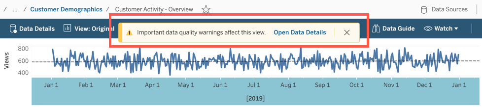
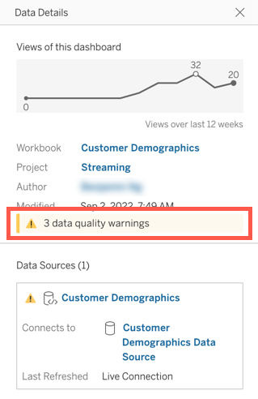
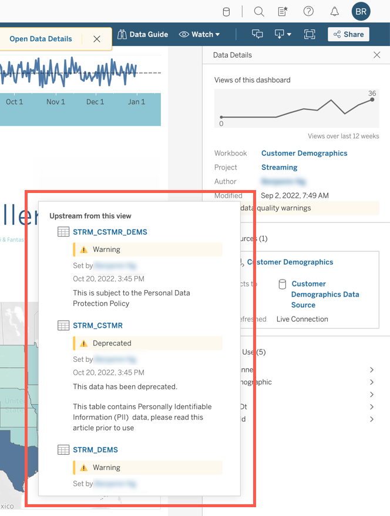
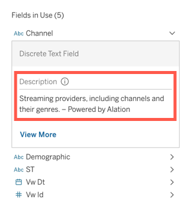
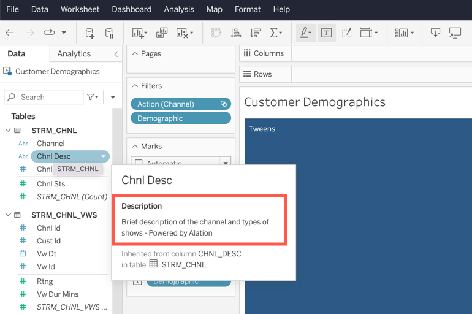
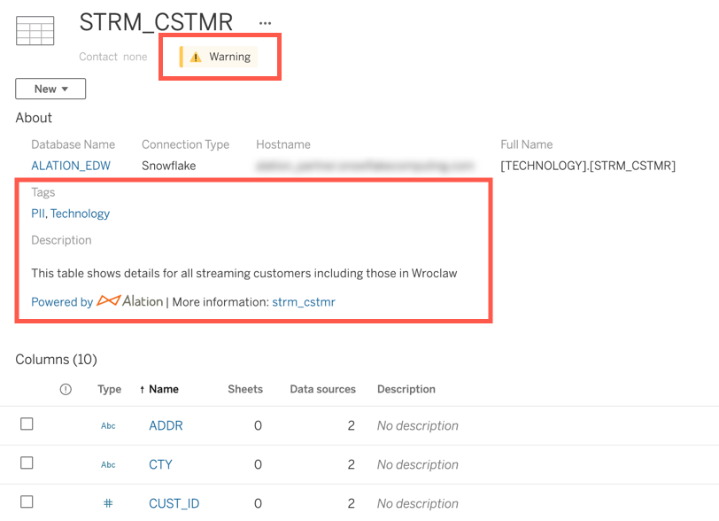
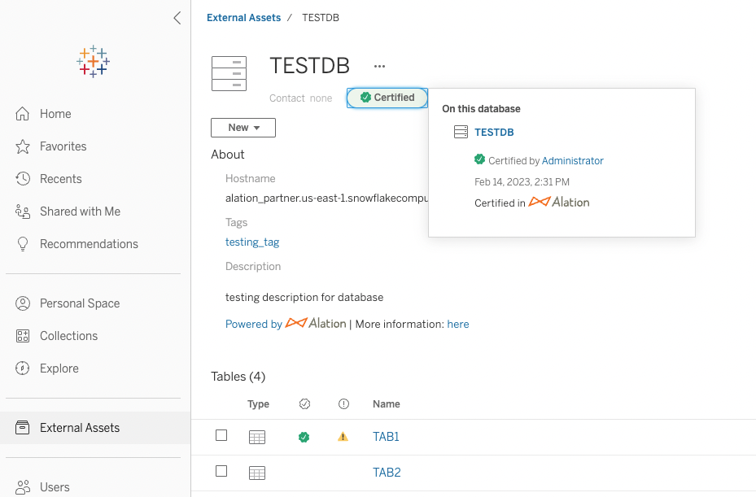

Alation Anywhere for Tableau¶
Alation Cloud Service Applies to Alation Cloud Service instances of Alation
Customer Managed Applies to customer-managed instances of Alation
Available from 2022.4
With Alation Anywhere for Tableau, users of Tableau can see certain metadata from Alation directly within Tableau. This enables Tableau users to see data descriptions, warnings, and more in Tableau itself. Alation serves as the single source of truth while supporting data users in their chosen context.
A Server Admin can enable this feature and set up a schedule to automatically send data from Alation to Tableau.
Prerequisites¶
To use Alation Anywhere for Tableau, the following prerequisites must be met:
Alation and Tableau must be connected to the data source whose data you want to sync. This must be an external RDBMS data source. It can’t be an XSL or CSV that’s embedded on the Tableau server.
You must have added Tableau Data Management to your Tableau deployment. This enables us to use the Tableau APIs to send data to Tableau.
You must have the Tableau OCF connector version 1.2.0 or later installed in Alation. See the section on SSL certificates below for more information about your encryption options.
You must have connected Alation to an instance of Tableau Cloud or Tableau Server version 2021.3 or later.
You must have added curated metadata, such as descriptions, tags, and trust check flags to the data and performed metadata extraction with this connector at least once.
Important
Alation Anywhere for Tableau does not yet support connections between Alation Cloud Service and an on-premise Tableau connector installed with the Alation Agent.
Enable Alation Anywhere for Tableau¶
Starting in 2023.1, Alation Anywhere for Tableau is enabled automatically for all customers.
To use Alation Anywhere for Tableau on older versions, you must first enable the feature on your Alation instance. Alation Cloud Service customers can submit a support ticket to request the feature to be enabled. To enable this feature for on-premise instances, you must be a Server Admin with access to the Alation server.
To enable Alation Anywhere for Tableau for on-premise instances in 2022.4 and earlier:
Use SSH to connect to the Alation server.
Enter the Alation shell using the following command:
sudo /etc/init.d/alation shell
Enter the following command:
alation_conf alation.ocf.bi.upload_lms_data -s True
(Optional) By default, Alation will sync metadata for databases, tables, and columns. You can configure which object types will be synced using the following command, removing the object type for which you don’t want to sync metadata:
alation_conf tableau.upload.scope -s databases,tables,columns
Enable and Schedule Metadata Upload to Tableau¶
You must be a Server Admin to configure Alation Anywhere for Tableau. As a Server Admin, you can enable and disable the feature, and you can send metadata to Tableau manually or set up an automatic schedule.
To configure the uploading of Alation metadata into Tableau:
In Alation, click Apps in the top right corner, then click Sources.
Click the Manage Settings tab.
Click BI Servers.
Click on the wrench icon to the right of your Tableau instance.
Scroll down to Metadata Upload From Alation to BI Server and toggle Enable Automated Upload on or off.
Click the drop-down arrows under Automated Upload Time. Select the desired options to set up the schedule.
Encrypt the Connection with an SSL Certificate¶
The data transfer from Alation to Tableau can be made secure by encrypting the connection. This can be done by attaching an SSL certificate to the Tableau connector.
Note
The information in this section only applies to the metadata upload from Alation to Tableau. However, the Tableau connector can only have one SSL certificate, which will apply to both metadata extraction and metadata upload (if configured to use encryption).
SSL Certificate Options¶
There are three options available for encryption, depending on the version of Alation you’re using:
SSL certificate signed by a Certificate Authority
Self-signed SSL certificate (2023.1.6 and newer)
Disabled certificate (2023.1.6 and newer)
These options are described below.
Self-Signed SSL Certificate¶
Applies to 2023.1.6 and newer
From version 2023.1.6 of Alation, you can encrypt the connection with a self-signed SSL certificate. These are also known as private certificates. These custom certificates are signed by your organization itself rather than a Certificate Authority.
Self-signed certificates should be uploaded as a full chain certificate, not a single certificate. Make sure you have selected the right option when downloading it from the Tableau server.
Disabled Certificate¶
Applies to 2023.1.6 and newer
From version 2023.1.6, you can also disable SSL verification for metadata extraction and metadata upload. This turns off encryption when data is sent over the open internet. For security reasons, we do not recommend this. However, you may want to do this temporarily for troubleshooting or testing or if your certificate has expired.
Configure Encryption Settings¶
Applies to 2023.1.6 and newer
From version 2023.1.6, you can configure what kind of encryption settings the Tableau connector will use for metadata upload from Alation to Tableau.
Encryption Parameters¶
There are two parameters in alation_conf that control the encryption behavior:
tableau.upload.modetableau.upload.connection_encryption
The tableau.upload.mode parameter determines whether the new encryption options in 2023.1.6 can be used for metadata upload from Alation to Tableau. It has two possible values:
production—Maintains the older behavior where only SSL certificates assigned by a Certificate Authority can be used.production_v2—Enables the options in 2023.16 and newer. SSL certificates can be signed by a Certificate Authority, self-signed, or disabled.
The tableau.upload.connection_encryption parameter determines what encryption behavior to use for metadata upload from Alation to Tableau. It is only used when tableau.upload.mode is set to production_v2. It has three possible values:
default—The encryption will be based on the Disable SSL Certification checkbox on the BI server settings page in Alation.true—Metadata upload will always be encrypted with the provided SSL certificate. The Disable SSL Certification checkbox will be ignored for metadata upload.false—Metadata upload will not be encrypted. The Disable SSL Certification checkbox will be ignored for metadata upload.
Change Encryption Parameters¶
If you’re an Alation Cloud Service customer, you can send a request to Alation Support to change the parameters for you.
If you’re on an customer-managed (on-premise) instance of Alation, a Server Admin can change the parameters on the Alation server.
To configure encryption settings for customer-managed instances of Alation:
Use SSH to connect to the Alation server.
Enter the Alation shell using the following command:
sudo /etc/init.d/alation shell
Enter the following command, providing the desired value as described above:
alation_conf tableau.upload.mode -s <value>
Enter the following command, providing the desired value as described above:
alation_conf tableau.upload.connection_encryption -s <value>
Configure Encryption Settings on the Tableau Data Source¶
To configure encryption settings on the Tableau data source:
In Alation, go to Apps > Sources.
Click the Manage Settings tab, then BI Servers on the left.
Click the wrench icon for your Tableau data source on the right.
Scroll down to the Additional Settings section.
Select or deselect the Disable SSL Certification checkbox as desired.
If you’re using SSL encryption, under Server SSL Certificate, click upload and select your certificate.
Monitor Alation Anywhere for Tableau¶
There are two ways to monitor Alation Anywhere for Tableau.
Upload Job Status Dashboard¶
Starting in 2023.1, you can monitor the status of the data transfer from Alation to Tableau.
In Alation, click Apps in the top right corner, then click Sources.
Click the Manage Settings tab.
Click BI Servers.
Click on the wrench icon to the right of your Tableau instance.
Scroll down to Metadata Upload From Alation to BI Server. The Upload Job Status table shows the latest upload jobs, their status, and any errors that may have occurred. You can now: - Click the View Details link to see full error messages and other details. - Click Refresh to update the table. - Use the Prev and Next buttons below the table to see more jobs.
Extended Logging¶
Starting in 2023.1.4, Alation can record extended logging about the data transfer from Alation to Tableau. The logs can be particularly helpful in identifying cases where a table fails to be synced due to having the same name as another table.
Alation Cloud Service customers can enable extended logging by submitting a support ticket.
To enable logging for on-premise instances of Alation:
Use SSH to connect to the Alation server.
Enter the Alation shell using the following command:
sudo /etc/init.d/alation shell
Enter the following command:
alation_conf tableau.upload.detailed_logging_enabled -s True
Logs will be visible on the Alation server in celery-metadata_upload.log and celery-metadata_upload_error.log.
Understand How Alation Sends Metadata to Tableau¶
After enabling Alation Anywhere for Tableau, there are two stages in the process of getting metadata into Tableau. First Alation sends the metadata to Tableau. Then Tableau propagates the metadata to specific objects.
It may take some time for the metadata to fully propagate. For example, an upload of 10,000 objects may take about 6 minutes to send from Alation to Tableau and about 4 hours for Tableau to fully propagate the metadata.
Alation sends metadata for the following data objects:
Data sources
Tables
Columns
Alation sends the following metadata to Tableau:
Trust check flags
Warnings
Deprecations
Endorsements (starting in 2023.1.4)
Descriptions
Tags
If a data object has both warning and deprecation flags, the flag will appear as a deprecation in Tableau, but the description for both the warning and the deprecation will be shown.
Starting in 2023.1.4, Alation uploads additional data:
Endorsement flags, which are displayed as certifications in Tableau.
Descriptions and tags inherited from catalog sets.
Important
The Tableau API limits our ability to delete tags and descriptions from Tableau. Deleting a tag or description in Alation will not delete the corresponding data in Tableau automatically.
Find Alation Metadata in Tableau¶
In general, you will find Alation metadata in context when working with data in Tableau. Specifically, you’ll find metadata in the Data Details panel and when viewing tables or databases in Tableau. You may also see warning pop-ups when viewing workbooks with deprecations or warnings.
Alert Pop-up¶
When Alation has sent warnings or deprecations about the view’s data, you’ll see a warning message at the top of the screen. Click on Open Data Details to see more information.
Data Details¶
You can see Alation metadata at any time by clicking on Data Details.
In the Data Details panel, click on the yellow warning banner to see specific data quality warnings.
A popup will appear giving details on the warnings that were sent from Alation.
{kind=link}
The Data Details panel also shows Alation descriptions of columns under the Fields in Use section.
Worksheet Editor Data Panel¶
Tableau users with a Creator or Explorer (can edit) license can see column descriptions from Alation when editing a worksheet. This enables Tableau editors to better understand the data they’re using. Hover over a column name in the Data panel to see the description.
Note
Tableau will not show deprecations, warnings, or tags in the worksheet editor data panel.
Tableau Data Management External Assets¶
If you have added Tableau Data Management to your Tableau deployment, you can go to External Assets in the left navigation pane and see Alation descriptions, warnings, deprecations, and tags associated with your data.
For example, when viewing a table in Tableau Data Management, you can see the table’s description and tags from Alation. You can also see any endorsements (shown as Certified), deprecations, and warnings from Alation on the table. (Endorsements were added in 2023.1.4.)
Click on a warning, deprecation, or Certified icon to get details about it. Click the Powered by link to go to the Alation home page, or click on the More information link to go to the object’s catalog page in Alation.
